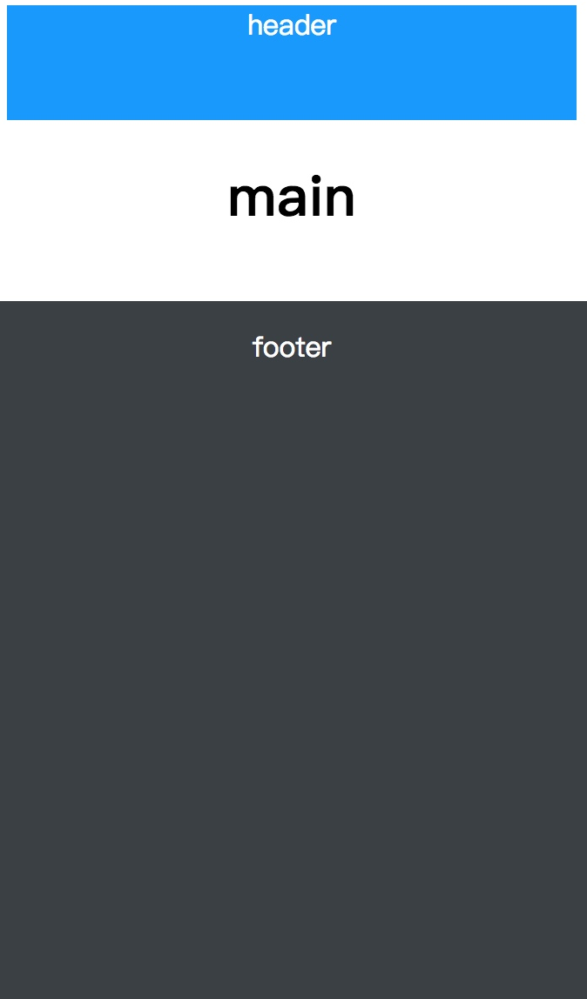

CSS outline 自动填满屏幕剩余空间
有不少网站的主要背景是白色的，底部是深色的，于是就会出现这样一个场景，当主内容很少的时候，包括底部在内的都不足一瓶，或者用户的显示器是竖屏，则很可能出现下图所示的情况：

如何让底部背景颜色正好填满剩余屏幕区域呢？这个时候可以用 outline 属性。假设HTML代码是这样的：
<div class="header">
<h1>header</h1>
</div>
<div class="main">
<p>main</p>
</div>
<div class="footer">
<p>footer</p>
</div>
然后设置的CSS为：
.header {
height: 66px;
background: #0097ff;
color: #fff;
text-align: center;
}
.main {
text-align: center;
}
.footer {
height: 50px;
}
.footer > p {
position: absolute;
left: 0;
right: 0;
text-align: center;
padding: 15px 0;
background-color: #3b4045;
outline: 9999px solid #3b4045;
clip: rect(0 9999px 9999px 0);
color: #fff;
}
实现效果的关键 CSS 就是设置一个超大轮廓范围的 outline 属性。例如这里设置成9999px，作用是保证无论屏幕多高，轮廓色块也一定能够覆盖。
但是和 border 属性不一样，outline 是无法指定方位的，只是被动地向四周扩散。因此outline: 9999px solid #3b4045; 不仅会填满底部方位的屏幕空间，还会把上面的空间内容也填满。因此还要进一步进行处理。这里可以用 clip 剪裁策略，让底部元素绝对定位，同时以上边缘和左边缘为界进行裁剪，这样完全不用担心outline 会覆盖上面的内容。代码组合为：
position: absolute;
clip: rect(0 9999px 9999px 0);
使用 9999px 这么大的值也是为了确保100% 填满屏幕。于是最终效果图为：
